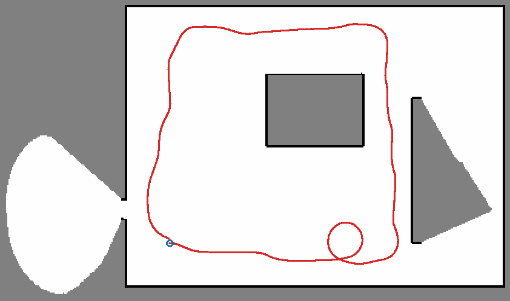

A recorded drive becomes our own map: NDT's 3D map and a 2D map for the planner, made with SLAM, not from the EKF. Phase D of the testing plan (TODO 250).
pixi install --locked -e slam # once (x86_64 Linux, Apple-silicon Macs)
pixi run record-drive --name lot --note "the lot" # the drive (Recording a mapping drive)
pixi run map-drive bags/<drive> # its maps, into bags/<drive>/map/
pixi run map-drive --merge <map A> <map B> --out maps/lot # two drives: what both sawNot yet run on the car
Built and proved in Ravensim (19 Nov). A real drive, its GPS and its lidar's sweep are untested. Loop closures were never found in the sim (below).
Why SLAM
The recording kit's first NDT map was placed by the EKF's poses: each wall drawn several times, 33 cm off the truth's map (median; 1.2 m at 95 %). SLAM places each cloud by matching it to the others, so the walls land once.
What it does
bag (MCAP) ──▶ lidar clouds ──▶ KISS-SLAM ──▶ poses ──▶ fit to GPS ──▶ poses in the map
no ROS base_link, odometry, (or the start │
ground cut loop closures, pose) ▼
pose graph NDT map + 2D map + chunks| Step | How |
|---|---|
| Read | the drive's MCAP files, with mcap-ros2-support: no ROS needed |
| SLAM | KISS-SLAM: KISS-ICP's odometry in local maps every 30 m (--split), MapClosures' loop closures, g2o's pose graph. The ground (below 0.3 m) is cut out, as aav_kiss_icp does |
| Flatten | x, y, yaw only: the stack is 2D. With the ground cut, a 3D path sank 1 m in 91 m |
| Place | the path fitted to the good GPS fixes by least squares (slam_map.georeference); too few fixes: the EKF's start pose; neither: left local |
| NDT map | the same rules as ndt-map: ground out, 45 m, one point per 10 cm |
| 2D map | 0.25 m cells. Occupied: hit 0.3-2 m above the ground in 2 clouds or more. Free: the lidar's rays crossed it. Else unknown |
| Chunks | the 64 m chunks (chunk-map, ndt-chunks), when cargo is here |
| Score | a Ravensim drive only: against the truth (below) |
A good GPS fix: status 0 or more, at most 0.5 m standard deviation (--gps-sd). The fit
needs 20 of them, 15 m apart. The map's YAML says how it was placed, and the move from
SLAM's frame to the map (placed: slam_to_map).
What it writes
| File | What |
|---|---|
ndt.pcd, ndt.yaml |
NDT's map: give it to ndt:=true ndt_map:= |
map2d.pgm, map2d.yaml |
the 2D map, a map server's trinary map (aav_costmap's map_server) |
chunks/ |
chunks.yaml, fine/, coarse/ (the 2D map), ndt/ (NDT's) |
poses.tum |
the path in the map frame, TUM format (t x y z qx qy qz qw) |
poses_slam.tum |
the path in SLAM's own frame |
closures.yaml |
the loop closures found, and where |
report.md |
all of this, and the scores |
truth.pcd, ekf.pcd |
Ravensim only: the same clouds on the truth's and the EKF's poses |
ndt-map build <bag> --poses-file poses.tum builds NDT's map from any file of poses too.
The proof in Ravensim
Two drives on the test lot, recorded with record-drive --sim (the short one: two legs)
and record-drive --sim --loop (the whole route, back home: 208 m, 225 s).

The maps against the truth's map (the same clouds placed by Ravensim's truth):
| Drive | Poses | Path off: median | 95 % | Map off: median | 95 % |
|---|---|---|---|---|---|
| short (91 m) | KISS-SLAM | 3.1 cm | 6.5 cm | 2.3 cm | 10 cm |
| short | EKF, with GPS | 8.6 cm | 20 cm | 33 cm | 1.2 m |
| loop (208 m) | KISS-SLAM | 3.7 cm | 7.2 cm | 2.3 cm | 11 cm |
| loop | EKF, with GPS | 8.9 cm | 20 cm | 27 cm | 1.1 m |
Placed by the GPS (Ravensim's fixes are noisy: 0.5 m off the fit, median): the fit was 1 cm and 0.02° from the truth. The 2D map: every occupied cell of a map made the same way on the truth's poses found within one cell, and every one of ours right.
Placed by the start pose instead (--no-gps): 11 cm off (the EKF's start was 10 cm
out), so the GPS fit is the default.
Two drives merged (short onto loop's, ICP, then only points both saw within 25 cm): 109,000 points, 3.1 cm off the truth (median), 11 cm at 95 %. Moved 1 m and 3° on purpose first, ICP put it back (-0.96 m, 0.56 m, -3.03°).
NDT on the SLAM map
ndt:=true in Ravensim's test lot, the lot tour (4 legs, 152 m), the loop drive's maps:
pixi run measure controllers --ndt --ndt-map bags/<drive>/map/ndt.pcd --tours lot --controllers mppi| NDT's map | Off the truth, mean per leg | Worst | Clouds with a pose | Restarts |
|---|---|---|---|---|
KISS-SLAM's (ndt.pcd) |
3.5 / 4.2 / 4.4 / 4.7 cm | 11 cm | 100 % | 0 |
the same clouds on the truth (truth.pcd) |
0.3 / 0.4 / 0.3 / 0.3 cm | 8 cm | 100 % | 0 |
NDT on our map is as steady as on the truth's, and as far off as the map is: about 4 cm, mostly where the GPS fit put it (Ravensim's GPS wanders). Each match: 1.1-1.4 ms. All four legs reached.
Loop closures
None were found on the test lot, at any --split (15, 30, 50 m) or density-map cell (0.2,
0.25, 0.5, 1 m): MapClosures matches ORB features on a picture of each local map seen
from above, and drops features that look like others. The lot's plain walls and boxes give
it almost none. KISS-ICP alone stayed within 11 cm over 208 m there, so nothing needed
closing. A real place (trees, kerbs, parked cars) should give it features: untested.
Several drives
--merge A B fits B's NDT map onto A's (Open3D's point-to-plane ICP, x, y and yaw only:
both maps are flat), then keeps only the points the other map has within 25 cm
(--radius). A car parked in one drive only drops out. So does anything only one drive
saw: drive the same route each time.
Next: more than two drives (keep what most saw), the 2D maps merged the same way, and a person checking the result in the map editor (phase E).
Licences
| Part | Licence | Note |
|---|---|---|
| KISS-SLAM, KISS-ICP, MapClosures (PRBonn) | MIT | |
| g2o (in KISS-SLAM's wheel) | BSD | its CHOLMOD solver: SuiteSparse's, LGPL-2.1+ |
| Open3D | MIT | from conda-forge: PyPI's Linux wheel needs a newer glibc than the workspace's |
| mcap, mcap-ros2-support | MIT |
The LGPL part is linked into a wheel we install from PyPI and run on a laptop; we never ship it on the car, so that is fine. No GPL.
Platforms: x86_64 Linux and Apple-silicon Macs. kiss-slam and map-closures have no wheel for 64-bit ARM Linux (the Orin): make maps on a laptop, copy the files to the car.
Code
| File | What |
|---|---|
tools/map_drive.py |
the command: reads the bag, runs KISS-SLAM, writes the maps (the slam env) |
tools/slam_map.py |
its maths, no ROS: poses, UTM and the GPS fit, the 2D map, scores, merging (tools/tests/test_slam_map.py) |
tools/ndt_map.py |
NDT's map rules, shared; --poses-file |
tools/record_drive.py |
--sim --loop: the whole route, for a loop |